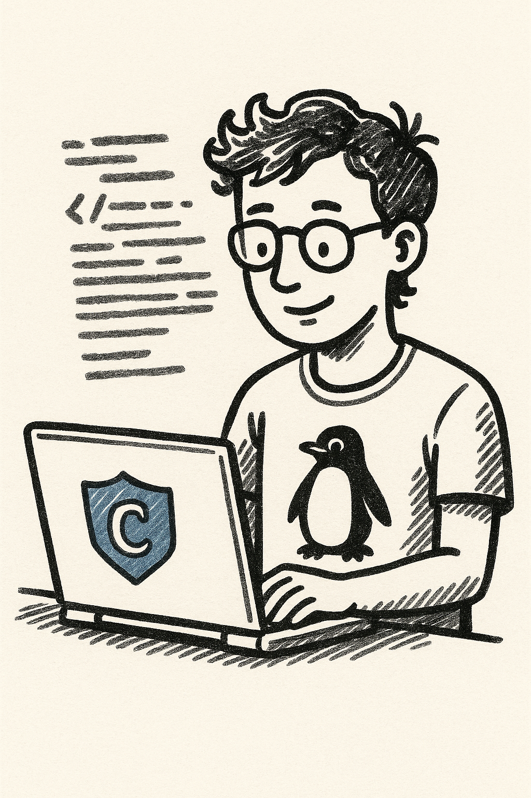

Verkkosivujen toteutus
alkaen 170 € / sivusto
- Toimintaasi sopiva ulkoasu ja sisältörakenne
- Puhelimella ja tietokoneella toimiva sivusto
- Palvelujen ja yhteystietojen selkeä esittely
- Sivun otsikot ja hakukoneiden perustiedot kuntoon

Tarmola Code GarageVerkkosivut yrityksille ja yhdistyksille
Tyylikkäät ja toimivat nettisivut, joiden hankkiminen on helppoa. Suunnittelen ja toteutan sivut omalle toiminnallesi sopiviksi. Saat halutessasi myös verkkotilan ja ylläpidon samasta paikasta.
Porvoosta käsin, yhteistyötä myös etänä.
Sopiva kokonaisuus oman toimintasi tarpeisiin. Työn laajuus ja hinta sovitaan etukäteen.
Saat apua ulkoasun ja sisällön suunnitteluun, toteutukseen sekä sovittaessa ylläpitoon.
Oma ilme, selkeä sisältö ja helposti löytyvät yhteystiedot. Sivut toimivat myös puhelimella.
Selkeä alku. Sovittu kokonaisuus.
Pienen yrityksen tai yhdistyksen nettisivujen ei tarvitse olla suuri projekti. Aloitetaan siitä, mitä asiakkaasi tai jäsenesi tarvitsevat: palvelut, toiminta ja helppo tapa ottaa yhteyttä.
alkaen 170 € / sivusto
alkaen 19 € / kk
Alkaen-hinnat. Sivumäärä, toiminnot, verkkotunnus, ylläpidon sisältö ja lopullinen hinta sovitaan tarjouksessa ennen työn aloittamista.
Oma tyyli löytyy kokeilemalla
Pidätkö selkeästä ja ajattomasta, luonnonläheisestä vai rohkean värikkäästä? Mallistossa on vaihtoehtoja perinteisestä yrityssivusta pehmeään hoitolaan, retrohenkiseen kahvilaan ja näyttävään portfolioon.
Mallin toimiala on vain esimerkki. Ilme, rakenne, kuvat ja tekstit sovitetaan juuri sinun yrityksellesi tai yhdistyksellesi. Voit myös poimia mieluisia asioita useammasta mallista.
Vertaa verkkosivumalleja ↗Näin päästään alkuun
Kerro toiminnastasi ja toiveistasi. Katsotaan mallistosta sopiva lähtökohta tai suunnitellaan ilme yhdessä.
Sovitaan laajuus, sisältö ja hinta. Kootaan tekstit, kuvat ja yhteystiedot toimivaksi kokonaisuudeksi.
Tarkistetaan sivut yhdessä ja sovitaan julkaisusta. Halutessasi saat myös hostingin ja ylläpidon.
Kaikki tarkoittavat tässä samaa asiaa: yrityksesi tai yhdistyksesi omaa sivustoa verkossa. Saat selkeät www-sivut, joiden ulkoasu, sisältö ja yhteydenotto sopivat toimintaasi.
Kyllä. Sopiva typografia, värit ja selkeä sisältö tekevät paljon. Mallisto auttaa löytämään oman suunnan, ja toteutuksen laajuus sovitetaan tarpeisiisi.
Et tarvitse teknistä osaamista. Autan toteutuksessa ja julkaisussa. Hostingista ja ylläpidosta voidaan sopia erikseen, alkaen 19 €/kk. Ylläpidon sisältö ja päivitystarpeet sovitaan yhdessä.
Kyllä. Mallien yritykset ja yhdistykset ovat kuvitteellisia. Esimerkiksi kahvilan ilme voidaan sovittaa puodille ja urheiluseuran rakenne toiselle yhdistykselle.
Sivusto toteutetaan myös puhelimella toimivaksi. Selkeät otsikot, palvelukuvaukset, sivukohtaiset hakutiedot ja tekninen löydettävyys auttavat hakukoneita ymmärtämään sivun sisällön. Hakusijoitukset muodostuvat monesta tekijästä.
Kyllä. Sivuston suunnittelu, aineistojen toimittaminen ja yhteydenpito onnistuvat myös etänä. Katsotaan yhdessä sinulle sopiva tapa edetä.
Omat verkkosivut alkavat yhteydenotosta
Kerro lyhyesti toiminnastasi, sivujen tarpeesta ja mahdollisesta suosikkimallistasi. Saat ehdotuksen sopivasta toteutuksesta.
Simo Sirén · Tarmola Code Garage · Porvoo